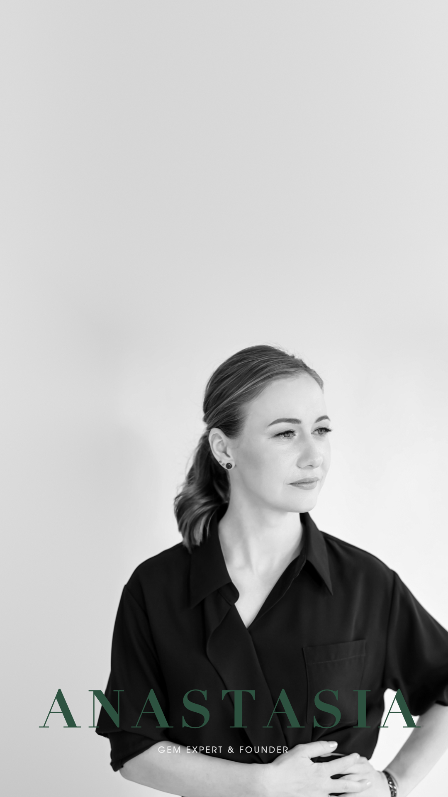
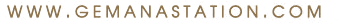

Founder Story
I was the first in my family
to choose jewelry making.
As a student, I sometimes had just enough money for food and jewelry tools.
But I was genuinely happy. I knew I had found my path.

I started as a jeweler.
Then I became
a gemologist.
Ten years in jewelry production. Then a move to Bangkok and five years
working with major companies in Asia. Back then, I never imagined I would
one day create my own brand.
We are all
a work in progress.
I believe we spend our entire lives learning and refining our talents.
Just like every gemstone, every person is unique.
ANASTASIA
Founder, Gem AnaStation
G.A. Gemstone Zine
Issue 01 / October 2026